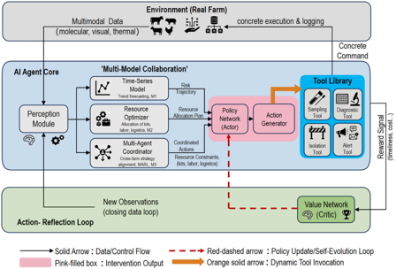
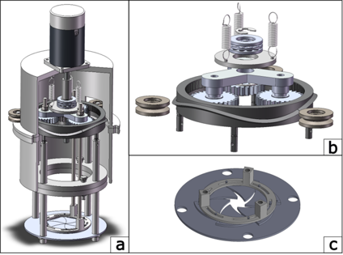

About Me
I am Yingtong Zhou (周映彤), an undergraduate at Zhejiang University pursuing a B.Eng. in Biosystems Engineering alongside studies in Public Administration at Chu Kochen Honors College.
My research focuses on how robots can infer 3D structure from incomplete observations and use that information to interact reliably with objects in unstructured environments. I work on multimodal 3D reconstruction, vision-guided manipulation, and underactuated mechanisms.
Research Interests
- 3D Perception · Geometric Reasoning · Multimodal Reconstruction
- Robotic Manipulation · Mechanism Design
- Robust Physical Interaction · Robot Learning in Unstructured Environments
Projects
Vision-Guided Robotic Manipulation with a Single-Motor, Underactuated End-Effector
I co-developed a six-blade iris gripper that uses contact resistance to switch mechanically from self-centering grasping to rotary-vibration extraction. A DetCo-based detector and probabilistic RGB-D elevation mapping estimate a 3D target for an XYZ gantry; the iris accommodates residual positioning error.
In a randomized 120-trial comparison, vibration reduced mean peak extraction force from 392 N to 331 N. The system achieved 94.5% success across 400 field trials.
Role First-author research · Oct 2024–present · Advisors: Dr. Huaiqu Feng and Prof. Yongwei Wang
Multimodal 3D Reconstruction, Point-Cloud Segmentation, and Geometric Understanding
I led a project that combined multi-view NeRF reconstruction with RGB, depth, and spectral observations to recover partially occluded plant structures over time. I worked on point-cloud processing, Transformer-based organ segmentation, and skeleton extraction.
The project achieved 34.5 dB PSNR in reconstruction, 0.93 organ-instance mIoU, and R² > 0.95 for plant height and leaf area estimates.
Role Project leader, National Undergraduate Research Training Program · 2025–2026 · Outstanding Completion
Advisors Dr. Ziyue Guo and Prof. Haiyan Cen
Publications & Patent


Closed-loop artificial intelligence agents for animal epidemic prediction and decision support in livestock farming: a review
Yuzhi Wang, Yingtong Zhou, Liyu Li, Huiling Xu, Wangze Ni, and Xiaoliang Li
Published review Frontiers in Veterinary Science, 13:1968632 · 2026


An intelligent hybrid-rice roguing system combining cross-modal perception with a mechanically triggered rotary-vibration end-effector
Yingtong Zhou, Shuqi Zheng, Chaoyue Yang, Yan Zhu, Huaiqu Feng, and Yongwei Wang
Revised manuscript submitted Computers and Electronics in Agriculture · 2026
Conceptual design of a 3-DOF underactuated dual gripper for rice purification
Nian Li, Xiyu Zhou, Huaiqu Feng, Yifei Wang, Yingtong Zhou, and Yongwei Wang
Conference paper ASABE Annual International Meeting, Paper 237 · 2025
Intelligent research on hybrid rice: focusing on the exploration and discovery of key datasets
Nian Li, Huaiqu Feng, Yifei Wang, Yingtong Zhou, and Yongwei Wang
Conference paper ASABE Annual International Meeting, Paper 226 · 2025
An iris-enveloping rotary-vibration roguing device and method
Shuqi Zheng, Yingtong Zhou, Yan Zhu, and Yongwei Wang
Patent application pending Chinese invention patent application No. 202611163903.0 · 2026
Education
Zhejiang University
B.Eng. in Biosystems Engineering · College of Biosystems Engineering and Food Science
Public Administration · Chu Kochen Honors College
Hangzhou, China · Sep 2023–present · GPA: 3.65/4.00
Wageningen University & Research
Summer Research in Bioengineering · Exchange Student · Excellent Participant Award
The Netherlands · Jul–Aug 2025
Industry & Robotics Experience
DexRobot Co., Ltd. — Robotics Intern
Tested dexterous-hand ball grasping sequences and documented a RoboCup demonstration. Designed a simulation study for robust grasping using Isaac Gym, PPO, and domain randomization of object mass and friction.
Aug–Sep 2026
MGB Endoskopische Geräte GmbH — R&D Intern
Supported real-time white-light and near-infrared image fusion and spatiotemporal enhancement for endoscopic visualization.
Berlin · Jan–Feb 2026
Guangxi Paiyangshan Forest Centre — R&D Intern
Evaluated lightweight recognition networks (MobileNet and ShuffleNet) and a mobile interface for edge deployment.
Aug–Sep 2025
Hangzhou Shanzhu Robotics Co., Ltd. — Algorithms Intern
Contributed probabilistic elevation maps and 3D profiles to support visual localization and ground-vehicle path planning in field robotics.
Jun–Sep 2024
Honors & Awards
- National First Prize, 15th “Challenge Cup” China College Students’ Entrepreneurship Competition · Core Project Leader
- National First Prize, China Collegiate Intelligent Robotics Competition · Team Leader
- National Second Prize, iCAN Student Innovation and Entrepreneurship Competition · Future Robotics Entrepreneurship Challenge, 2025
- First Prize, Guangdong–Hong Kong–Macao Greater Bay Area College Students Entrepreneurship Competition
- Third Prize, Beijing College Students Innovation and Entrepreneurship Competition
- Third-Class Scholarship, Zhejiang University
- Outstanding Student Leader, Zhejiang University; Exemplary Student Awards in Academic Progress, Innovation & Entrepreneurship, Community Service, and Labor Practice
Leadership & Activities
- President, Innovation and Entrepreneurship Association — Organized introductory entrepreneurship workshops.
- Volunteer Teacher — Designed hands-on microcontroller and LED activities for pupils in underserved communities.
- Outstanding Individual for Social Practice (2025) — Authored a Xinhua Net feature with over one million views.
Technical Skills
- 3D Perception & Learning: Python, PyTorch, NeRF, COLMAP, point-cloud processing, RGB-D and multispectral fusion, self-supervised learning
- Robotics & Mechanisms: ROS, SolidWorks, underactuated grippers, planetary transmissions, kinematic and force analysis, simulation study design with Isaac Gym and PPO
- Programming & Systems: C++, MATLAB, C, Git, CUDA, Arduino, Raspberry Pi, Altium Designer